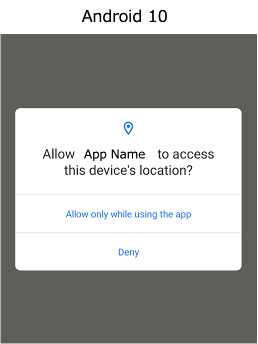

Adapting to changes in OS messages
After upgrading to a new version of OS, the test code that always succeeds may fail.
Changes in messages may the cause of this issue.
Example
The following is Location Permissions dialog for Android 10.

You can tap “Allow only while using the app” using tap function.
@Test
@Order(10)
fun original() {
scenario {
case(1) {
action {
it.tap("Allow only while using the app")
}
}
}
}
When upgrading from Android 10 to 11, “Allow only while using the app” changes to “While using the app”.

The test code fails.
In this case, you might adapt your test code using conditional if-else branch.
Using conditional branch
if (platformVersion.toInt() < 11) {
it.tap("Allow only while using the app")
} else {
it.tap("While using the app")
}
This works, but is not a good idea.
Instead of using conditional branch, you can use selector “||”(or).
Using || in selector
it.tap("Allow only while using the app||While using the app")
This is better than former, but writing literals in test code makes it less maintainable.
It’s better to use nickname.
Using nickname
it.tap("[While using the app]")
Define nickname in screen nickname file
"[While using the app]": "Allow only while using the app||While using the app"